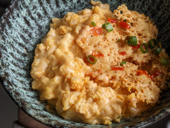

Crispy Sriracha Mac and Cheese

Description
This hearty recipe is a great warm and spicy treat for the mid-week winter blues. Play around with ingredients to make it spicier, creamier, or cheesier!
Ingredients
- 2 tablespoon melted butter
- 2 1/2 cup milk
- 1 egg
- 3 1/2 tablespoon sriracha
- 4 ounce cream cheese
- 2 1/2 cup shredded cheddar
- 1 pound orecchiette, half-cooked
- 2/3 cup breadcrumbs
Steps
- Preheat the oven to 350 degrees.
- In a large bowl, mix together the melted butter, milk, egg, Sriracha, cream cheese, and Cheddar.
- In a 4-quart glass baking dish, place the half-cooked orecchiette, and pour the cheese mixture over top, letting it fill the dish and surround the pasta noodles.
- Next, sprinkle the breadcrumbs over the whole dish, and pat down lightly with a spoon to get a semi-even texture.
- Place in the oven, uncovered, and bake for 45-55 minutes.